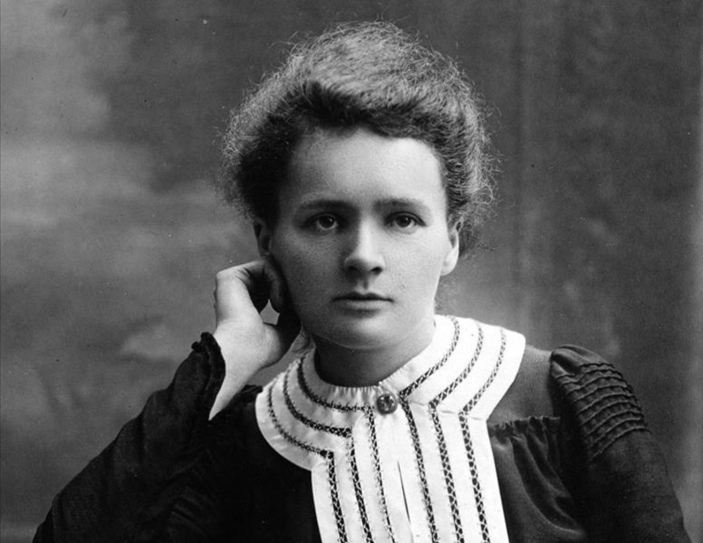

|  | |
|---|---|
| Información personal | |
| Nombre de nacimiento | Maria Salomea Skłodowska |
| Nacimiento | 7 de noviembre de 1867 Varsovia, Zarato de Polonia |
| Fallecimiento | 4 de julio de 1934 (66 años) Passy, Francia |
| Lugar de sepultura | Panteón de París y Cementerio de Sceaux |
| Familia | |
| Padres | Władysław Skłodowski y Bronisława Boguska |
| Cónyuge | Pierre Curie |
| Hijos | Irène y Ève Denise |
| Educación | |
| Educada en | La Sorbona |
| Tesis | Recherches sur les substances radioactives (1903) |
| Supervisor doctoral | Henri Becquerel Gabriel Lippmann |
| Información profesional | |
| Área | Física y química |
| Conocida por | Investigaciones sobre la radiactividad descubrimiento del radio y polonio |
| Empleador | Escuela Superior de Física y de Química Industriales de París Escuela Normal Superior de París Facultad de Ciencias de la Universidad de París Instituto del Radio del Instituto Pasteur y la Universidad de París |
| Estudiantes doctorales | André-Louis Debierne Émile Henriot1 Marguerite Catherine Perey |
| Miembro de | Academia de Ciencias de la Unión Soviética Academia de Ciencias de Rusia Real Academia de Artes y Ciencias de los Países Bajos Real Sociedad Científica Checa Real Academia de las Ciencias de Suecia (desde 1910) Sociedad Filosófica Estadounidense (desde 1910) Académie nationale de médecine (desde 1922) Comisión sobre Abundancia de Isótopos y Pesos Atómicos (desde 1930) Academia Alemana de las Ciencias Naturales Leopoldina (desde 1932) |
| Distinciones | Premio Nobel de Física (1903) Medalla Davy (1903) Matteucci (1904) Premio Nobel de Química (1911) Premio Willard Gibbs (1921) |